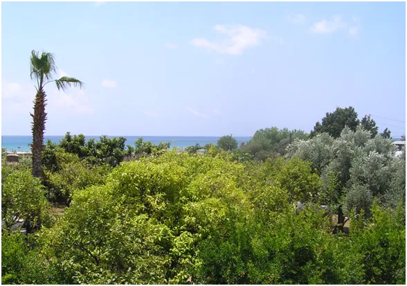
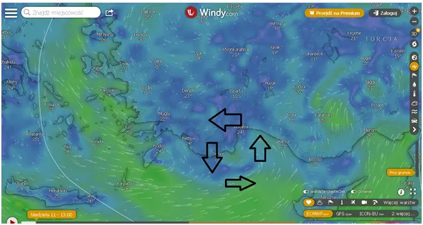
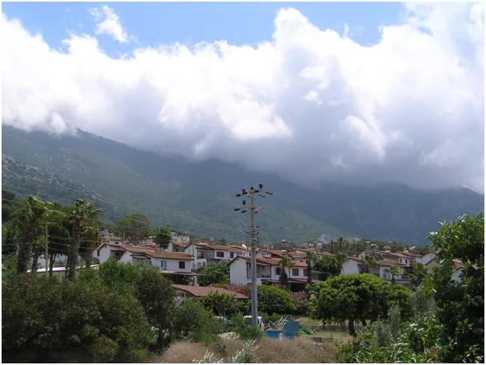
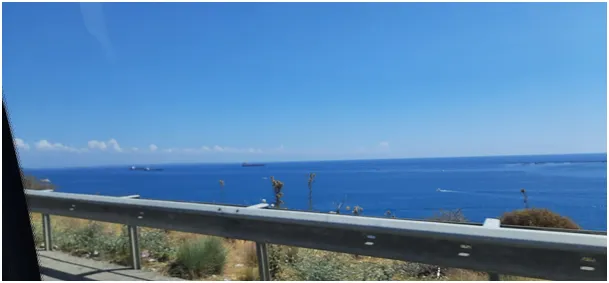
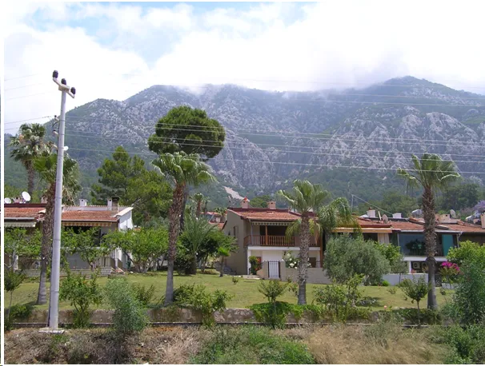

Niedziela Palmowa 2
Dziwny mamy rok pogodowy. W Lewancie zwykle latem są wielkie wyże, tymczasem za górką kilka km od naszej wioski, rodzi się mini niż i wieje od lądu do morza.

Chmury schodzą na kilkaset metrów, po czym znikają nad otwartym morzem. Za górką jest zatoka z plażą, będzie okazja popływać w południe w cieniu. Jak ktoś chce zmoknąć musi ze słonecznej plaży pojechać z 15 km w góry.

Wilgotność 50% i spada, bo zaczyna się tutaj lato. Po majowych burzach palmy odarte z dużych liści, ostały się tylko te najmłodsze, do września odrosną.

Co roku po zimowych sztormach zbiera się zeszłoroczne, zeschłe palmowe liście, stąd Niedziela Palmowa była w kwietniu. W tym roku mamy powtórkę w czerwcu.


Są takie miejsca, gdzie życie toczy się spokojniej niż przy hotelowych promenadach. Jutro jadę do miasteczka, na bazar. Będzie ciekawie, już zapraszam.
Paweł Klimczewski